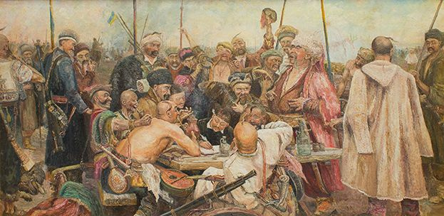

ЧТО ВАС ЖДЕТ
БУРЛАКИ НА ВОЛГЕ
Встреча с этой картиной — это тихий шок. Мы покажем, как молодой Репин превратил «жанровую сценку» в философский манифест.
НЕ ЖДАЛИ
Здесь Репин — режиссер и психолог. Мы поможем проследить за взглядами каждого героя: от изумления мальчика до молчаливого укора матери.

ЗАПАРОЖЦЫ
Приготовьтесь услышать хохот, который звучит уже полтора века. Это картина-праздник, картина-стихия. Мы покажем, как Репин годами собирал типажи для этого гимна вольнице, изучал старинные костюмы и доспехи.

ТОРЖЕСТВЕННОЕ ЗАСЕДАНИЕ ГОС.СОВЕТА
Уникальная возможность увидеть грандиозный «групповой портрет» власти во всей его сложности. Репин (с помощниками) создал не парадный отчет, а психологическую панораму целой эпохи на закате